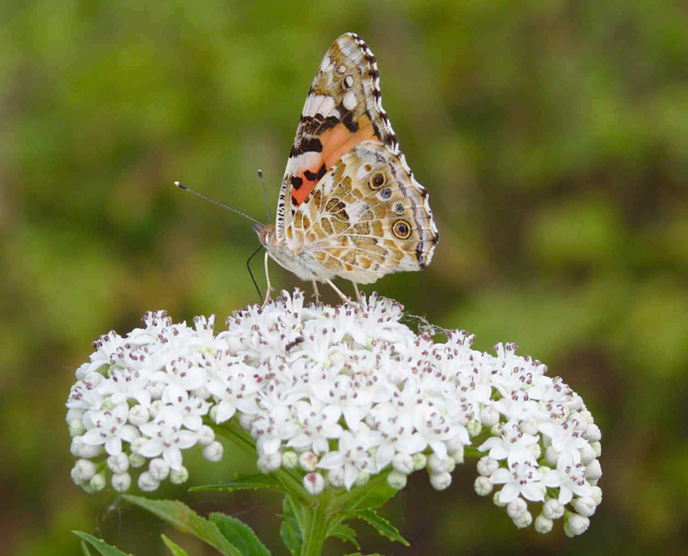
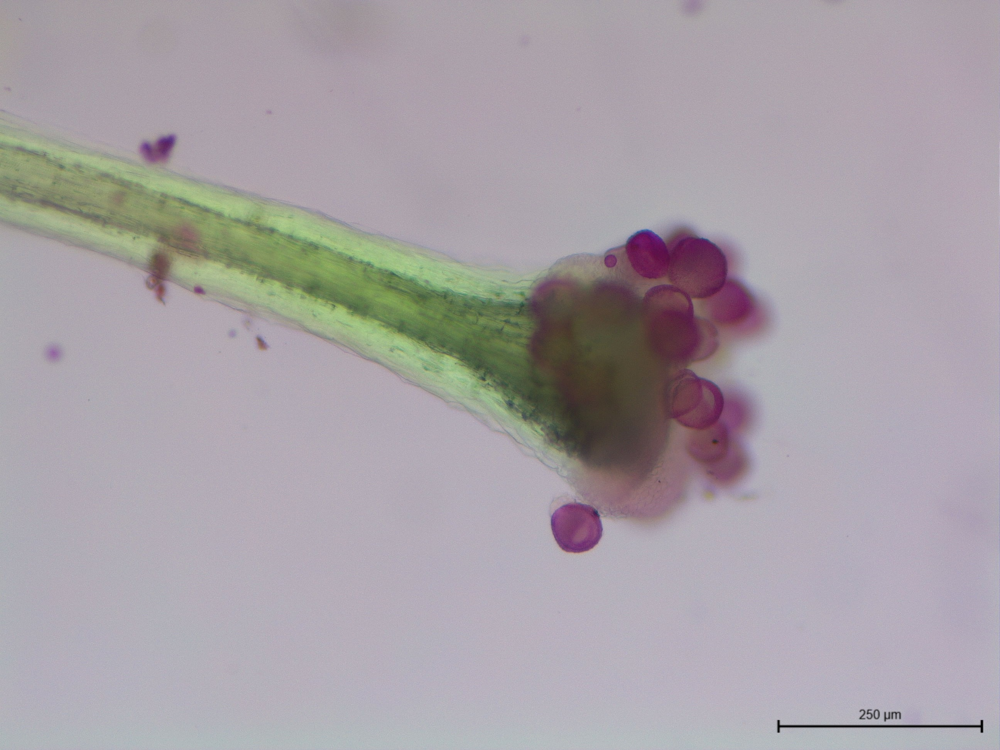

O mně
Zdravím, jmenuji se Jakub Štenc.
Jsem ekolog se zaměřením na polinační biologii. [cite_start]Zabývám se opylováním, přenosem pylu, květní ekologií, chováním opylovačů a ve výsledku mě zajímá, jak spolu dokáží rostliny a opylovači existovat v rámci společenstva[cite: 6].
[cite_start]V současnosti působím ve výzkumném ústavu CREAF při Autonomní Univerzitě v Barceloně ve Španělsku[cite: 7]. Zde pracuji na projektu zaměřeném na sdílení opylovačů mezi rostlinami v rámci grantu GACR POSTDOC INDIVIDUAL FELLOWSHIP OUTGOING.

Curriculum vitae
Jméno a datum narození
- Mgr. Jakub Štenc, Ph.D.
- [cite_start]Narozen: 4. března 1996 v Mladé Boleslavi [cite: 34]
Současné zaměstnání
- Zaměstnanec na Katedře zoologie, Přírodovědecká fakulta UK, s projektem GACR POSTDOC INDIVIDUAL FELLOWSHIP OUTGOING uděleným v roce 2024, zaměřeným na sdílení opylovačů mezi rostlinnými druhy.
- [cite_start]V současnosti na hostování v CREAF ve skupině GEIP vedené Jordi Boschem. [cite: 35]
Kontakt
- E-mail: jakubstenc@gmail.com
- Telefon: +420 774 553 734
- ORCID: 0000-0001-5364-7180
- Research Gate: Jakub_Stenc
Zaměstnání
- Karlova Univerzita, Praha, Katedra botaniky (2019 – 2021): Technik v laboratoři (úvazek 0,1).
- Karlova Univerzita, Praha, Katedra botaniky (2023 – 2025): Výzkumník v rámci projektu INTER-ACTION-LUAUS23, výzkumná činnost, terénní práce (úvazek 0,5).
- Akademie věd ČR, Botanický ústav, Průhonice (2024 – 2025): Postdoc (úvazek 0,5).
Vzdělání
- Ph.D. studium (2020 - 2024), Univerzita Karlova, Přírodovědecká fakulta, program Botanika. Téma disertační práce: Processes Driving Pollen Transfer in Generalised Pollination Systems. Školitel: RNDr. Zdeněk Janovský Ph.D. [cite_start]Dokončeno „cum laude“[cite: 36, 37, 38].
- Magisterské studium (2018 - 2020), Univerzita Karlova, Přírodovědecká fakulta, program Botanika (geobotanika). Diplomová práce: Changes in pollinator behaviour under different plant spatial aggregation. Školitel: RNDr. Zdeněk Janovský Ph.D. [cite_start]Dokončeno s vyznamenáním[cite: 39].
- Bakalářské studium (2015 – 2018), Univerzita Karlova, Přírodovědecká fakulta, program Biologie. Bakalářská práce: Přenos pylu jako funkce prostorového uspořádání rostlin a vlastností opylovačů. Školitel: RNDr. [cite_start]Zdeněk Janovský Ph.D.[cite: 40].
Mezinárodní zkušenost
- [cite_start]University of Tartu, Estonsko (2019): 6 měsíců, studijní pobyt Erasmus[cite: 41].
- Rey Juan Carlos University, Madrid, Španělsko (2022): 2 měsíce, stáž na oddělení biodiverzity pod vedením Marcose Méndeze.
- University of Granada, Španělsko (2023): 1 měsíc, stáž na katedře botaniky pod vedením Rocío Pérez Barrales.
Granty
- 2018-2021 – Spoluřešitel projektu GAUK: Plant population dynamics under anther smut epidemy and influence of pollinators on the rate of disease spread (1193619).
- 2019-2022 – Hlavní řešitel projektu GAUK: Flower traits as drivers of pollinator visitation behaviour (842120).
- 2021-2023 – Hlavní řešitel projektu GAUK STAR: Do the plant pollen presentation schedules fit pollinator diurnal activity? [cite_start]A test of the Pollen Presentation Theory (0016935)[cite: 42, 43].
- 2025-2028 – Hlavní řešitel projektu GAČR (Postdoc Individual Fellowship Outgoing): Long-term spatiotemporal dynamics in a plant-pollinator community and consequences for pollen transfer in a changing world (25-17193O).
Terénní zkušenost
- 2016-2017 – Sběr dat o polinačních sítích (vedoucí: Robert Tropek).
- 2018-2020 – Experimenty se šířením květních snětí opylovači (vedoucí: Klára Koupilová).
- 2017-2023 – Sběr dat pro vlastní bakalářskou, diplomovou a disertační práci.
- [cite_start]2023 – 4 měsíce v Ekvádoru (Andy), výzkum polinační biologie ve vysokohorském prostředí (vedoucí: Petr Sklenář)[cite: 21].
Jazykové a další dovednosti
- Čeština (rodilý mluvčí)
- Angličtina (pokročilý - C1/C2)
- Španělština (mírně pokročilý)
- Řidičský průkaz sk. [cite_start]A1 a B [cite: 44]
Školení studenti
- Alice Haveldová (Bc., obhájeno)
- Karolína Chvojková (Bc., obhájeno)
- Natálie Hanusová (Bc., Mgr., obhájeno)
- Petr Švanda (Bc., Mgr., probíhající)
- Klára Doksanská (Bc., probíhající)
- Kateřina Příbramská (Bc., probíhající)
- Aneta Hynčicová (Bc., probíhající)
- Eva Matoušková (PhD, probíhající)
- Lucie Holzbachová (Mgr., probíhající)
Publikace
Janovský, Z., & Štenc, J. (2023). Pollinator community and generalisation of pollinator spectra changes with plant niche width and local dominance. Functional Ecology, 00, 1–10. https://doi.org/10.1111/1365-2435.14439
Matoušková, E., Štenc, J., & Janovský, Z. (2023). Innate preferences of Eristalis tenax L. (Syrphidae) for flower colour, size and symmetry are more intricate than the simple additive model. Biological Journal of the Linnean Society, 140(1), 110–119. https://doi.org/10.1093/BIOLINNEAN/BLAD035
Štenc, J., Janošík, L., Matoušková, E., Hadrava, J., Mikát, M., & Janovský, Z. (2023). Pollinator visitation closely tracks diurnal patterns in pollen release. American Journal of Botany, e16179. https://doi.org/10.1002/AJB2.16179
Koupilová, K., Štenc, J., & Janovský, Z. (2022). Pollinators adjust their behavior to presence of pollinator-transmitted pathogen in plant population. Behavioral Ecology, 33(2), 319–328. https://doi.org/10.1093/BEHECO/ARAB153
Koupilová, K., Štenc, J., & Janovský, Z. (2021). Pollen dispersal is driven by pollinator response to plant disease and plant spatial aggregation. Basic and Applied Ecology, 50, 77–86. https://doi.org/10.1016/j.baae.2020.10.0072016-2017
Témata výzkumu
FLOVID: Databáze návštěvníků květů
Kdo jsou opylovači volně rostoucích rostlin? Jaké jsou globální vzorce v interakcích rostlin a opylovačů? Co formuje složení spekter opylovačů? To jsou základní otázky, které překvapivě zůstávají z velké části nezodpovězeny.
Dosud jsme zjistili, že: - Většina rostlin má spektra opylovačů dominovaná mouchami, pestřenkami nebo blýskáčky, případně zcela generalizovaná. - Schopnost rostliny dominovat ve společenstvu ovlivňuje složení jejích opylovačů. - Širší nika rostlinného druhu vede k generalizovanějším spektrům opylovačů.
Více se dočtete v publikaci: Janovský, Z., & Štenc, J. (2023). Pollinator community and generalisation of pollinator spectra changes with plant niche width and local dominance. Functional Ecology.

Přenos pylu
Jak je pyl přenášen? Kolik pylových zrn je úspěšně doručeno na bliznu a kolik je nenávratně ztraceno? V posledních letech jsme se s kolegy zaměřili na načasování uvolňování pylu z květů. Zjistili jsme, že rostliny mohou časovat uvolňování pylu, což následně ovlivňuje načasování interakcí s opylovači a strukturu celé sítě.
Více v článku: Štenc, J., et al. (2023). Pollinator visitation closely tracks diurnal patterns in pollen release. American Journal of Botany.

Sdílení opylovačů rostlinami
Rostliny často sdílí celou řadu opylovačů. Jak ale tato skutečnost ovlivňuje přenos pylu? Jak mohou takové druhy koexistovat? A existují mechanismy, které zmírňují přenos cizího (heterospecifického) pylu? Právě těmto otázkám se budu věnovat v nadcházejících letech během své postdoktorandské stáže v Barceloně.
V současné době jsou k dispozici následující témata pro bakalářské a diplomové práce: Mechanismy ovlivňující přenos heterospecifického pylu a jejich vliv na dlouhodobou koexistenci rostlin Vliv květních znaků na sdílení opylovačů mezi rostlinami

Chování opylovačů
Jak barva, velikost a tvar květů ovlivňují rozhodování opylovačů o návštěvě květu? Jak tyto znaky ovlivňují věrnost opylovačů (konstanci)? Ke studiu chování opylovačů využíváme jak umělé květy (vytištěné na 3D tiskárně), tak živé rostliny. Zaměřujeme se například na pestřenku Eristalis tenax, kterou lze chovat v laboratorních podmínkách, což nám umožňuje porovnávat naivní a zkušené jedince.
Více v článku: Matoušková, E., Štenc, J., & Janovský, Z. (2023). Innate preferences of Eristalis tenax… Biological Journal of the Linnean Society.
V současné době je k dispozici téma pro závěrečnou práci: Faktory ovlivňující chování opylovačů ve vztahu k přenosu pylu